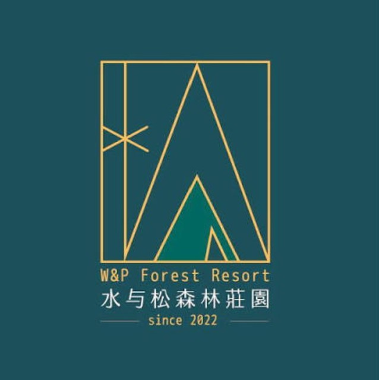
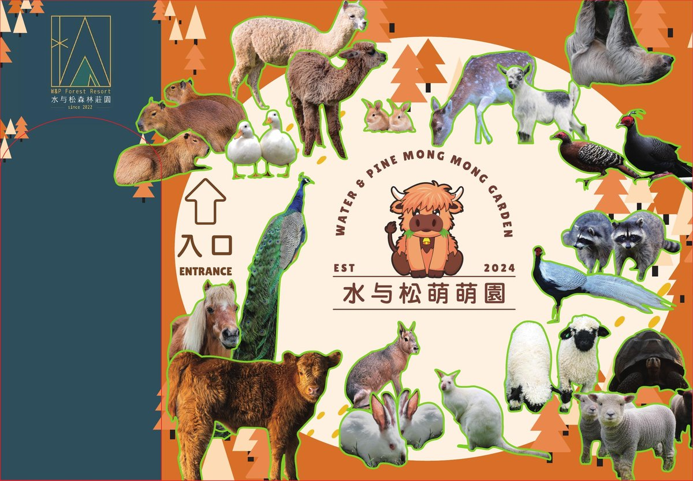
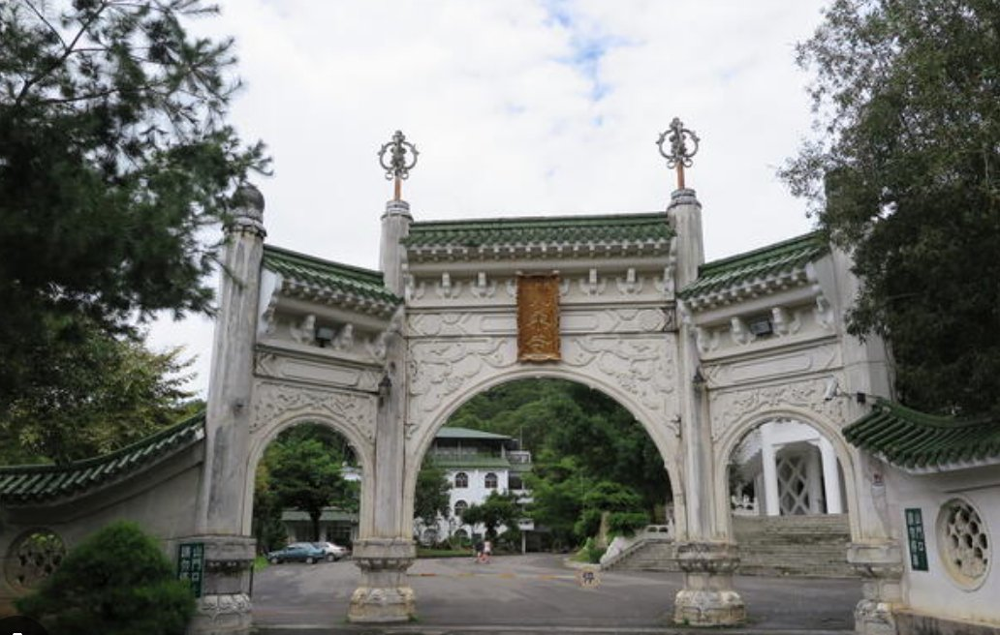
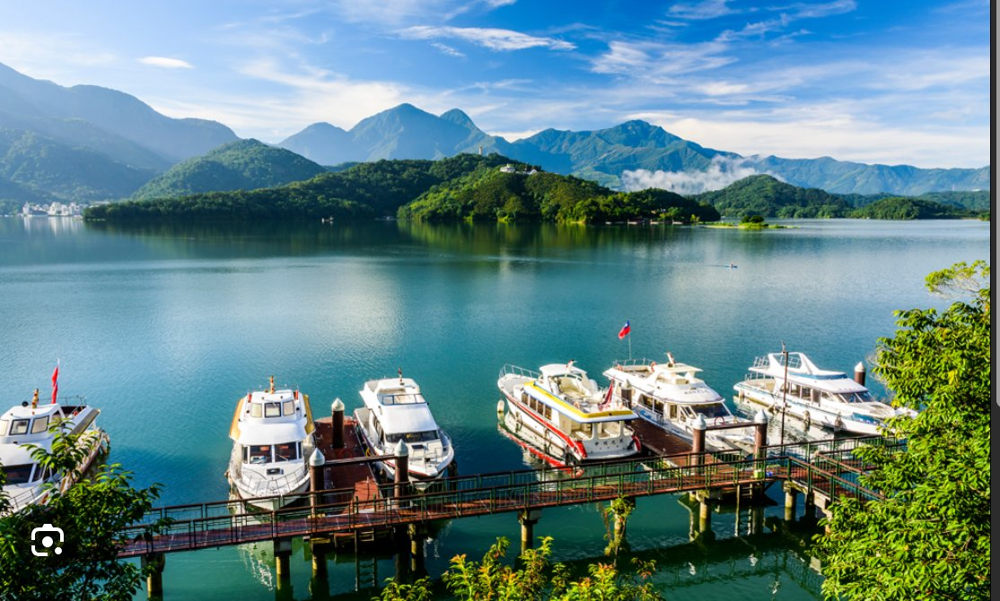
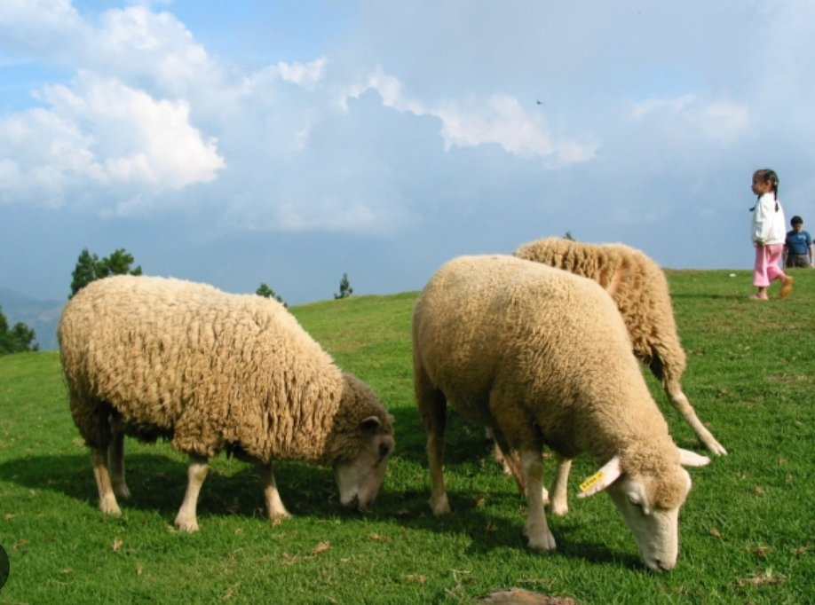
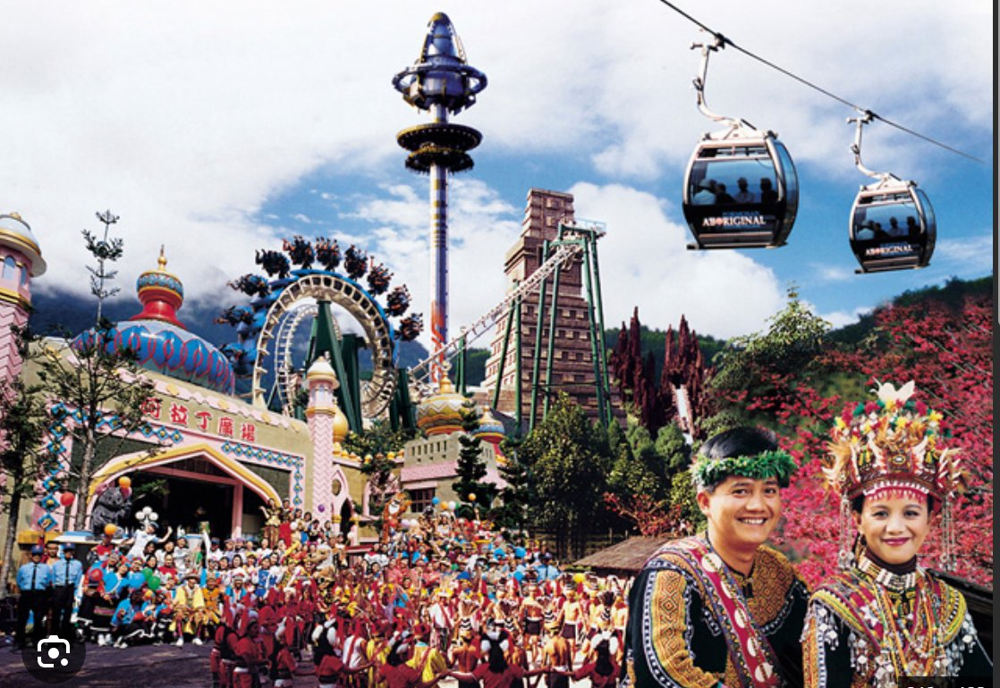

土地故事The land's story
這片土地的故事，要從已故的黃炳松老先生說起。他一生愛惜鄉土，當年寧願購入這片林地親手種樹養林，也不選擇增值潛力更高的建地。前後三、四十年歲月，他始終不灑一滴農藥、不輕易砍一棵樹，只為讓土地回到最原始的樣貌。正因為這份堅持，才留下今天這片樹齡數十年、完全無農藥的原始森林——園區內約有 2,600 棵、平均樹齡 50 年的老樹環繞，走進林間，你會聞到落葉與腐植土的氣味，聽見蟲鳴鳥叫此起彼落，那是四十年沒有被打擾過的土地，才養得出來的靈氣。水松千樹之森，就是在他所守護的這片土地上，由家族繼續用心經營下去。 The story of this land begins with the late Mr. Huang Bing-song. He loved this soil enough to buy raw forest land and tend it by hand, rather than choose ground with higher development value. For thirty to forty years, he never sprayed a drop of pesticide and never felled a tree without cause, wanting only for the land to return to its most original state. That discipline is why this forest still stands today, decades old and entirely untouched by chemicals — the grounds are ringed by roughly 2,600 trees averaging 50 years old. Walk beneath the canopy and you'll smell fallen leaves and rich humus, hear insects and birds calling back and forth. It's a kind of spirit only land left undisturbed for forty years can grow. Shuisong Thousand-Tree Forest is this land, still cared for by the family who has always watched over it.
「四十年不灑一滴農藥、不輕易砍一棵樹」——這片森林的靈氣，是時間換來的。 "Forty years without a single drop of pesticide, without a tree felled without cause" — this forest's spirit was earned, one season at a time.
森林住民Forest residents
四十年沒有農藥、沒有過度開發的森林，養出了豐富又安靜的生態。以下幾張都是營區周邊實拍的畫面。 Forty years without pesticide or heavy development has let a quiet, rich ecosystem take root. These photos were all taken right around the campground.


設施重點Facilities

乾濕分離、定時清潔，露營也能維持舒適的衛浴品質。 Dry and wet areas separated, cleaned on a fixed schedule — comfort doesn't stop at the tent flap.

全區供電穩定，帳篷、行動裝置都能安心充電。 Stable power across the grounds, so your gear and devices stay charged.

森林間可見多樣原生植物與野生動物蹤跡，安靜觀察也是一種享受。 Native plants and wildlife throughout the forest — quiet observation is its own kind of reward.
建設進度Construction progress
從整地、鋪設營位平台到管理室建置，我們一步步把這片林地準備好，也樂於讓你看見過程中的每一步。 From clearing the ground to laying platform decking and building the site office, we're preparing this land step by step — and happy to show you every stage of it.

沿溪引水打造的生態池，卵石駁岸與原生老樹相映，也是園區重要的生態基地。 A stream-fed ecology pond lined with river stone, framed by the forest's mature trees — an important habitat feature on the grounds.

木棧平台逐步完成，讓紮營更平整穩固。 Wooden platforms going in stage by stage, for flatter and more stable pitches.

提供未來現場服務與物資支援的基地。 A future base for on-site service and supplies.

穿過林蔭步道，就是森林裡的第一口深呼吸。 Walk the shaded trail in, and take your first deep breath of the forest.

木質外觀搭配黑色鋁框，示意圖，實際完工樣貌以現場為準。 Wood-clad exterior with black aluminum trim. Concept render — final look may vary on site.

初期營位規劃採木屑鋪面，兼顧排水與踩踏舒適度，示意圖。 Early-phase sites are planned with wood-chip flooring for drainage and comfort underfoot. Concept render.

依著老樹搭建的鳥巢造型平台，未來將規劃為林間咖啡休憩空間。 A bird's-nest-shaped platform built around a mature tree, planned as an elevated forest café and lounge space.

木構階梯環繞樹幹而上，兩側巢形座位圍繞樹身展開，是園區最具特色的新地標。 A timber staircase spirals up around the trunk to twin nest-like seating pods — one of the campground's most distinctive new landmarks.
營位規劃Site layout
營位分散於林間各處，保有隱私與空間感，不會有帳篷緊貼帳篷的壓迫感。實際位置將於預約確認後與您說明。 Campsites are spread throughout the forest for privacy and breathing room — no tent-to-tent crowding. Exact placement is confirmed once your booking is set.
查看預約日曆View booking calendar順遊景點Nearby attractions
營區位於南投埔里，車程半小時內就能串起幾個熱門景點，也包含由同一集團投資、值得順道一訪的姊妹據點。 We're based in Puli, Nantou — within about a 30-minute drive of several popular spots, including sister venues under the same family group worth a visit.

同集團林董投資的姊妹度假莊園，多款特色帳篷房型與星空景觀，想升級住宿體驗可以一併安排。 A sister resort backed by the same family group (Mr. Lin's investment) — distinctive tent-suites and starlit views, worth pairing with your stay if you want to upgrade for a night.
如何抵達 →Get directions →
近距離餵食水豚、羊駝、樹懶等可愛動物的萌寵樂園，親子出遊的好選擇，南村路9-7號。 A petting-zoo park where you can hand-feed capybaras, alpacas, sloths and more — a great add-on for families, at No. 9-7 Nancun Rd.
如何抵達 →Get directions →
就在營區旁的清幽古剎，找不到營區時，導航「地藏院」就對了。 A quiet temple right next to us — if you can't find the campground, navigate to "地藏院 (Dizang Temple)" first.
如何抵達 →Get directions →
台灣最大的高山湖泊，環湖騎車、搭船、纜車都值得安排半天時間。 Taiwan's largest alpine lake — cycling the shore, boat rides, and the cable car are all worth half a day.
如何抵達 →Get directions →
綿羊秀、青青草原與雲霧繚繞的高山景色，是埔里往合歡山方向的必經亮點。 Sheep shows, rolling green highland pasture, and mist-wrapped mountain views on the way toward Hehuanshan.
如何抵達 →Get directions →
主題樂園加原住民文化展演，還能搭日月潭纜車一路串聯過去。 A theme park paired with indigenous cultural performances — link it up with the Sun Moon Lake cable car for a full day out.
如何抵達 →Get directions →